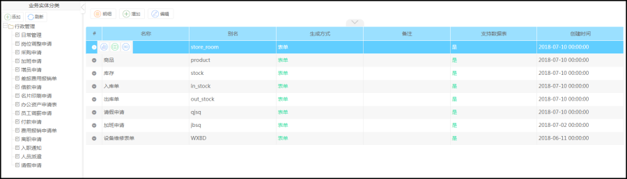

功能描述
业务模型设计是指设计在线自定义表单时根据表单生成元数据同时建立对应表单业务模型,业务模型中包含表单数据结构,关联的表单,关联BO等功能点,一般有业务人员进行查看编辑BO。
进入业务模型操作页面,点【流程管理】模块下的【流程设计】模块下的【业务模型设计】菜单,即进入业务模型设计的管理界面
新建表单生成物理表时，这里会自动生成一个对应的业务模型。

【操作属性说明】
1.数据结构:查看模型对应表单JSON视图JSON数据
2.关联表单:查看模型中PC表单和手机表单
3.管理BO:查看模型对应表单生成的BO数据,可删除BO数据